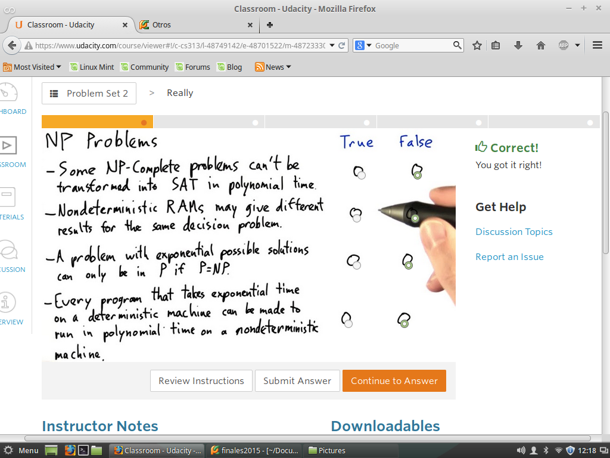
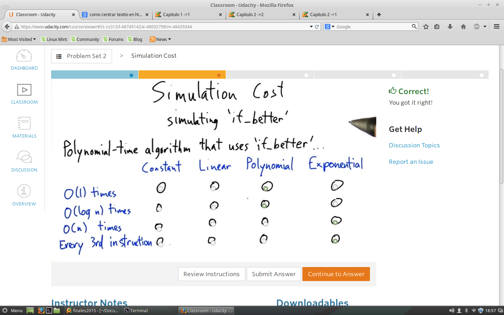
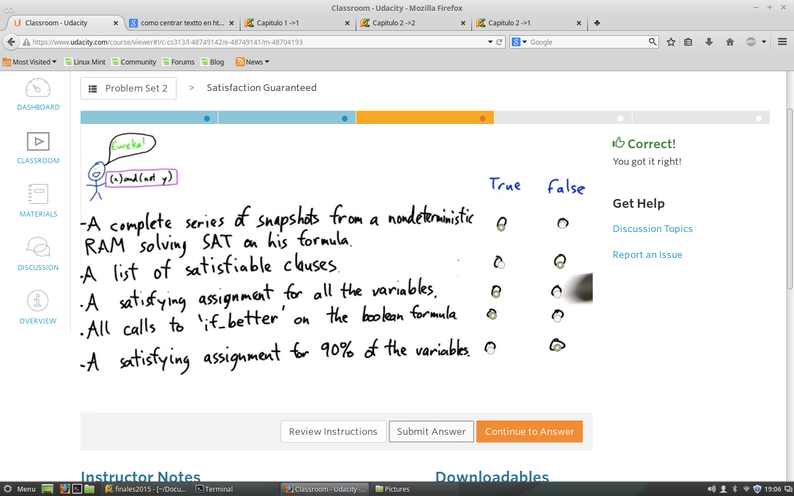
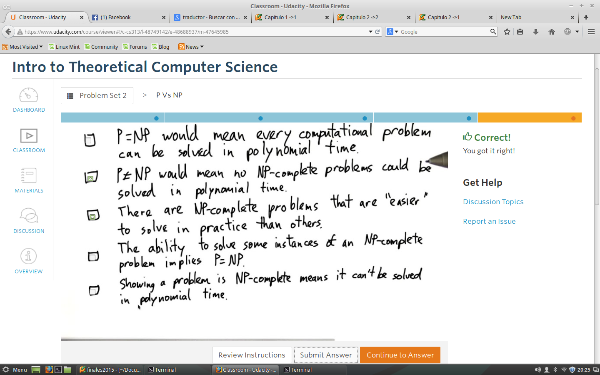

Problem Set 2
Test 1 - Realmente
Determinar ciertas caracteristicas que se tiene si se cumplen o no

Test 2 -Formula especial Basica
Bueno esta es una forma de establecer,ciertas propiedas que tiene una formula Booleana tan
extensa pero que en dado caso, se simplifica el analisis con tales Propiedades a formulas
tan especiales como esta:

Test 3 - Propiedades de Formula Booleana
Una de las cosas curiosas aqui, es ver como puedo expresar una gran formula booleana,
en cada una de los estados de la Memoeria RAM,teniedo las respectivas tres diviciones de memoria
y conociendo que cada parte de memoria contiene un numero de celdas, las que pueden almacer diferenctes
valores de variables en cada estado de memoria de forma polinomial.
esta es lo ma importatante de mostrar el Teorema de Cook-Levis.

Test 4 -Numero de comunicaciones
Contruyecto una Formula Boolena.
Primero: Cada paso de tiempo de ejecucion del algoritmos sea un SNAPSHOTS
Segundo: Que el primer SNAPSHOTS represente mi primera linea de codigo: t=0
Tercero: Cada SNAPSHOTS encaje en el Siguiente SNAPSHOTS
Cuarto: Que retorne "Yes", para determinar que el algoritmo satisface la Formula Booleana
Por ultimo tenemos una serie de afirmaciones, la idea es identificar cuaes son verdaderas de
acuerdo con los conociemientos adquiridos
Test 5 - If...Then
Dada una formula Boooleanas, con operadores Logicos.Bebemos determinar los
estados en los que satisface una Formula Booleana
